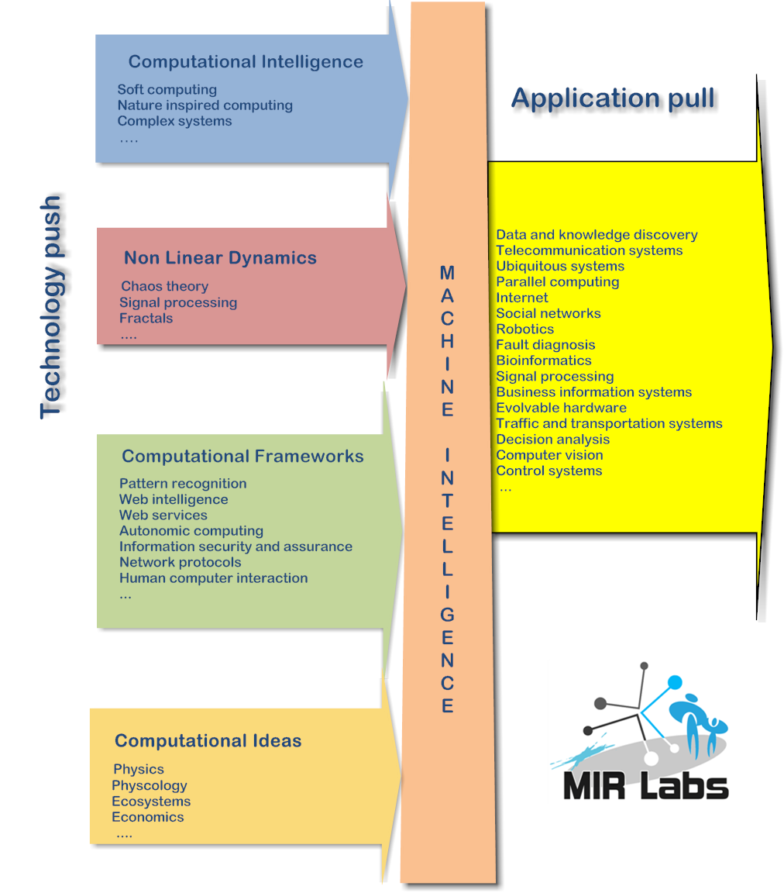

Toggle navigation
MIR Labs
Home
About Us
Welcome Message
Our Team
Acknowledgements
Publications
Books
Edited Volumes
Journal papers
Book Chapters
Proceedings
Conference Papers
Funded Grants
Conferences
HIS
ISDA
IAS
SoCPaR
IBICA
NaBIC
WICT
CASoN
NWeSP
ECDM
BiGDaCI
Grants
Journals
JIAS
IJCISIM
JNIC
Contact
Director's Message
Add Some Short Description
Home
|
Welcome Message
MIR Labs - Founder Director Welcome Message
Machine Intelligence Research Labs (MIR Labs) was established in 2008 as a global non-profit academic consortium focused on innovation and research excellence. MIR Labs network comprises of several leading academicians and scientists from the Universities and Industry from different continents. The main objectives of Machine Intelligence Research Labs (MIR Labs) are as follows.
To initiate new innovative research directions by networking together the critical mass of resources
To strengthen scientific and technological excellence on a particular research area, which is important to a particular geographical region / area / country etc.
To integrate the various research efforts of the scientific team to be a source of innovation on possible scientific, technological and socio-economic trajectories to mould the future of Machine Intelligence
To promote and sponsor scientific activities (conferences and workshops) in developing and under represented countries by offering mentoring, technical assistance etc.
The idea of Machine Intelligence refers back to 1936, when Alan Turing proposed the idea of universal mathematics machine, a theoretical concept in the mathematical theory of computability. In the MIR Labs framework, machine intelligence refers to building adaptive intelligence (network intelligence) in a network of machines (networks) to solve a problem. Computational intelligence techniques have found their way in solving some real world problems in science, business, technology and commerce. Today we have methodologies that could translate languages, identify objects in images and video, advanced automation in manufacturing processes, control cars etc., just to name a few. Inspite of the evolution of current techniques, sometimes we realize that the so-called computational intelligence is many a times very artificial in nature. It can be argued with some conviction that a computationally intelligent algorithm that cannot solve new problems in new ways is emphasizing the artificial and not intelligence.Defining machine intelligence is not an easy task. It is a consortium of various technologies involving non-linear dynamics, computational intelligence, ideas from physics, physcology and several other computational frameworks.

We are blessed with sophisticated technological artifacts that are enriching our daily lives and the society. It is believed that the cyber infrastrcuture is going to provide us the framework to integrate, control or operate virtually any device, appliance, monitoring systems, infrastructures etc. An Internet enabled cyber-ecosystem is not far away. Such a complex system has to be autonomous and able to continuously adapt, providing the required quality of service levels according to different service level agreements, without requiring the need of much human intervention. This is an interesting problem. The challenge is to design intelligent machines and networks that could communicate and adapt according to critic or error information, self organize and resilient in case of a system, service or component failure due to natural cause or a malicious attack. Currently a lot of focused research works is going in different areas and most of these results are confined to the institutions and laboratories. We believe that an academic initiative is required to integrate the various research efforts to build complex intelligent machines and networks that can tackle our complex problems of the future.
The goal of our society is to develop an efficient and highly productive research group with the least over-head costs focusing on machine intelligence research. This requires a concerted team effort from a diverse group of individuals and institutions. Our work culture is based on extensive collaboration with international scientific networks including universities, research centers, regulatory authorities and industry from all over the world. Our research teams work toward a common goal of generating scientifically validated innovations, including methods of research, technologies, that benefit the society. Gender equity, youth, and resilience play a significant role in our research portfolio and how to engage young research at all levels of the research process. We also support graduate student training, which is critical to improving the research capacity of scientists in developing countries that positively impacts people and communities. Over the years, we got involved in
several funded research projects
from the Government and the Industry.
We publish three open access journals (free publication for authors):
- JIAS - Journal of Information Assurance and Security (JIAS) - (2006 - )
- IJCISIM - International Journal of Computer Information Systems and Industrial Management (2009 - )
- JNIC - Journal of Network and Innovative Computing (2013 - )
We are also involved in several annual academic conferences focused on artificial intelligence, data science, network security, social networks, web services and various applications. Please feel free to browse some of these events and organized countries during the last 20 years:
-
Hybrid Intelligent Systems (HIS):
Portugal, India, Morocco, South Korea, Kuwait, Tunisia, Malaysia, USA, China, Spain, Germany, New Zealand, Brazil, Japan, Australia and Chile
-
Intelligent Systems Design and Applications (ISDA):
India, Portugal, Morocco, Japan, Malaysia, Spain, Egypt, Italy, Taiwan, Brazil, China, Poland, Hungary and USA
-
Information Assurance and Security (IAS):
India, Portugal, Morocco, France, Japan, Tunisia, Brazil, Malaysia, USA, China, Italy and UK
-
Soft Computing and Pattern Recognition (SoCPaR):
Portugal, Morocco, India, Japan, Tunisia, Vietnam, Brunie, China, France and Malaysia
-
Next Generation Web Services Practices (NWeSP):
Brazil, Spain, India, Czech Republic and South Korea
-
Computational Aspects of Social Networks (CASoN):
India, South Africa, Portugal, USA, Brazil, Spain, China and France
-
Nature and Biologically Inspired Computing (NaBIC):
India, Morocco, South Africa, Portugal, USA, Mexico, Spain and Japan
-
Bio-Inspired Computing and Applications (IBICA):
India, Morocco, France, Czech Republic, Taiwan and China
-
Information and Communication Technologies (WICT):
India ,Portugal, Morocco, Japan and Vietnam
-
European Conference on Data Mining (ECDM):
Spain, Portugal, Czech Republic, Italy, Germany and Netherlands
-
Big Data Analytics, Data Mining and Computational Intelligence (BIGDaCI):
Portugal and Spain
Those who have not heard from us, and if you are a researcher in the field of machine intelligence you are welcome to join the MIR Labs network and several volunteering opportunities are waiting for you. You will find the online form and the membership is free. I hope you will enjoy visiting MIR Labs web site and browsing the links will open up new, interesting scientific questions. In the various pages, you will find information regarding past publications, projects, special interest groups, activities and infrastructure, as well as the members of the research team. You will also find announcements about news and events. On social media you can find us on facebook, Linkedin and Twitter and more places to come. On behalf of our collaborating international community of machine intelligence scientists as well as supporting partner institutions, we look forward to the opportunity to achieve our global mission, research quality and contributing to the development of the community.
Prof. Dr. Ajith Abraham
Founding Director - Machine Intelligence Research Labs (MIR Labs)